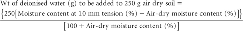

This method requires very simple apparatus, but does result in contact between SE and the atmosphere. Solution yield can be disappointing particularly for cracking clays, and aeration can change carbonate chemistry (Dowling and Howitt 1987). It should be used only when equipment for extraction by automatic extractor or centrifuge is unavailable or inconvenient.
Table 14.1 Summary details of method codes, method titles, technologies and expected reliability of tests described in this chapter.
Code |
Technology |
Test method |
Notes |
14A1 |
Physical with simple apparatus. |
Saturation extract – filter suction. |
Sound, low-cost procedure when atmospheric exposure is acceptable. |
14A2 |
Physical with automatic extractor. |
Saturation extract – automatic extractor. |
Sound, semi-automated procedure when atmospheric exposure is acceptable. |
14A3 |
Physical with centrifuge. |
Saturation extract – centrifuge, closed system. |
Good, reliable laboratory procedure, preferred when atmospheric exposure needs to be avoided. |
14A4 |
Saturation extract – centrifuge, Cillman. |
||
14B1 |
Electrode and conductivity meter. |
Electrical conductivity/SE (EC/SE). |
Good laboratory estimate of EC/SE. |
14C1 |
pH electrodes and millivolt meter. |
PH/SE. |
Good laboratory estimate of pH/SE. |
14D1 |
Potentiometrie titration to specified pH values (8.3 & 4.5). |
Bicarbonate/SE and carbonate/SE – Potentiometrie titration. |
Preferred laboratory method for estimate of HC03/SE and C03/SE. |
14D2 |
Titration to specified pH values (8.3 & 4.5) with indicators. |
Bicarbonate/SE and carbonate/SE – indicator method. |
End point detections by indicators are more subjective than those by Method 14D1. |
14E1 |
Potentiometrie titration with Ag/AgCI electrodes. |
Chloride/SE – Potentiometrie titration. |
Classical laboratory method for Cl– in aqueous solutions, but may suffer from operator error. |
14E2a |
IC technology, with chemical suppression. |
Chloride/SE – IC (chemical suppression of eluent conductivity). |
Good estimate of Cl– (plus common cations and most anions), with moderate sensitivity. |
14E2b |
IC technology, single-column with electronic suppression. |
Chloride/SE – IC (single-column with electronic suppression of eluent conductivity). |
Good estimate of Cl– (plus other common anions), with high sensitivity. |
14E3 |
ICPAES at 134.724 nm. |
Chloride/SE – ICPAES finish. |
Good estimates of CI– with few adverse environmental consequences. Requires ability to operate at 1 34.724 nm, which is beyond the capability of many ICPs. |
14F1 |
ICPAES for SO4-S (plus P and cations). |
Sulfate-S/SE – ICPAES (plus P and soluble cations). |
Good estimates of SO4-S (plus P and cations) at low cost and with few adverse environmental consequences. |
Turbidimetric analysis of SO4-S. |
Sulfate-S/SE – turbidimetric. |
Only justified if ICPAES and/or IC instrumentation is unavailable. |
|
14F3 |
Gravimetric analysis of SO4-S. |
Sulfate-S/SE – gravimetric. |
Only justified if ICPAES and/or IC instrumentation is unavailable. |
14F4 |
Method code only. |
Sulfate-S/SE – automated colour. |
Refer to Rayment and Higginson (1992) for details. |
14F5a |
IC technology, with chemical suppression. |
Sulfate-S/SE – IC (chemical suppression of eluent conductivity). |
Good estimate of SO4-S (plus most anions), with moderate sensitivity. |
14F5b |
IC technology, single-column with electronic suppression. |
Sulfate-S/SE – IC (single-column with electronic suppression of eluent conductivity). |
Good estimate of SO4-S (plus most anions), with high sensitivity. |
14G1 |
Fluoride specific ion and reference electrodes and millivolt meter. |
Fluoride/SE – specific ion electrode. |
Reliable method for F/SE if close attention is paid to concentration, pH and ionic strength. |
14G2a |
IC technology, with chemical suppression. |
Fluoride/SE – IC (chemical suppression of eluent conductivity). |
Only suitable for F/SE with special columns and at elevated concentrations. |
14G2b |
IC technology, single-column with electronic suppression. |
Fluoride/SE – IC (single-column with electronic suppression of eluent conductivity). |
Preferred IC methodology for F/SE, due to better analytical sensitivity. |
14H1 |
ICPAES for key nutrient cations. |
Soluble bases/SE (Ca, Mg, K, Na). |
Good estimates of the specified soluble bases/SE, at low cost and with few adverse environmental consequences. |
0.1% Sodium Hexametaphosphate Solution
Dissolve 0.1 g sodium hexametaphosphate flake – mainly (NaPO3)6 – in 100 mL deionised water.
Prepare saturation pastes as indicated in Method 2D1 or by initially calculating from Method 2C1 the weight of deionised water (g) to be added to a known weight (e.g. 250 g) of air-dry soil of <2 mm.

where 250 in the above calculation equates to the 250 g sample weight.
Next weigh 250 g of each soil into a mixing container. With equal precision, weigh and transfer the calculated quantity of CO2-free deionised water to each soil and mix to form a paste of even consistency. There should be no dry aggregates. Cover, stand for 1 h, individually remix each paste to even consistency and allow to stand covered for a further 15 h or overnight and remix.
Prepare a Buchner funnel fitted to a conical filter flask. The apparatus should be arranged to support a collecting tube of borosilicate glass, which should fit loosely around the delivery end of the Buchner funnel.
Moisten a clean Whatman No. 50 filter paper with deionised water when in the Buchner funnel and apply suction to settle the paper. Next, transfer each of the saturated pastes to Buchner funnel/s and apply suction until 2–3 mL from each are extracted. Discard the initial extract, install a clean, dry borosilicate glass collecting tube, then apply suction until air just commences to pass through the filter. Remove the collecting tube plus extract from respective conical filter flasks and seal to prevent evaporation and excessive contact with the atmosphere.
Analyse the SE for electrical conductivity (EC/SE), pH/SE, monovalent bicarbonate ions (HCO3/SE) and divalent carbonate ions (CO3/SE) as quickly as possible following extraction. If necessary, filter through a 0.20 μm Millipore filter (Gillman 1976). Add 1 drop of 0.1% Sodium Hexametaphosphate Solution per 25 mL portions of SE being retained for cation and anion analyses (other than EC/SE, pH/SE, HCO3/SE, CO3/SE and Na/SE) to prevent possible precipitation of calcium carbonate (CaCO3) due to CO2 dissolution. How to undertake these determinations and subsequently to report results are described later in this chapter.